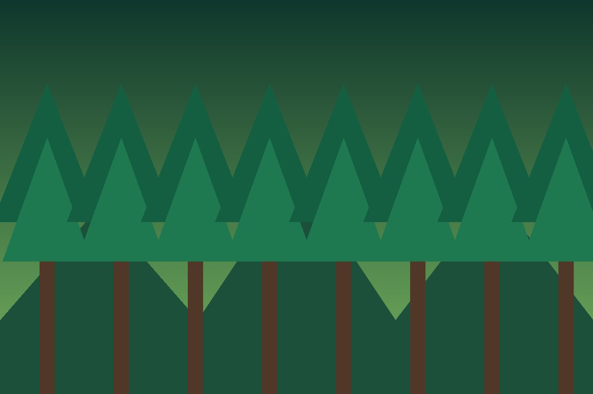
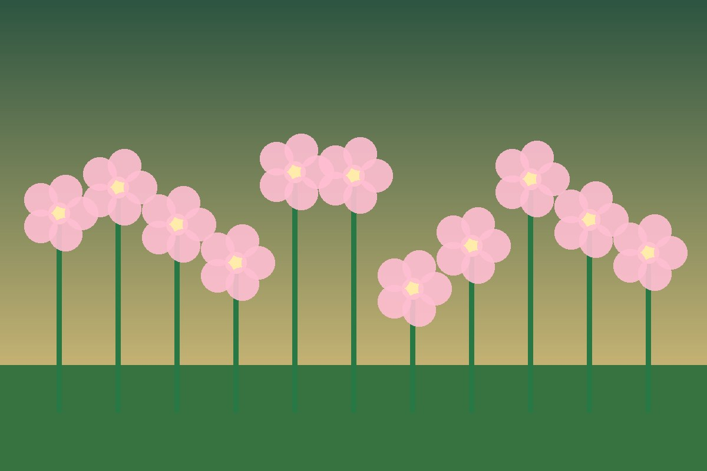

Skip to Main Content
Interactive Photo Gallery
Explore six scenes using your mouse or keyboard.
Hover over or focus an image below to preview it here.
Mountain Sunrise
Ocean Waves

Forest Trail
Desert Dunes
City at Dusk

Wildflowers